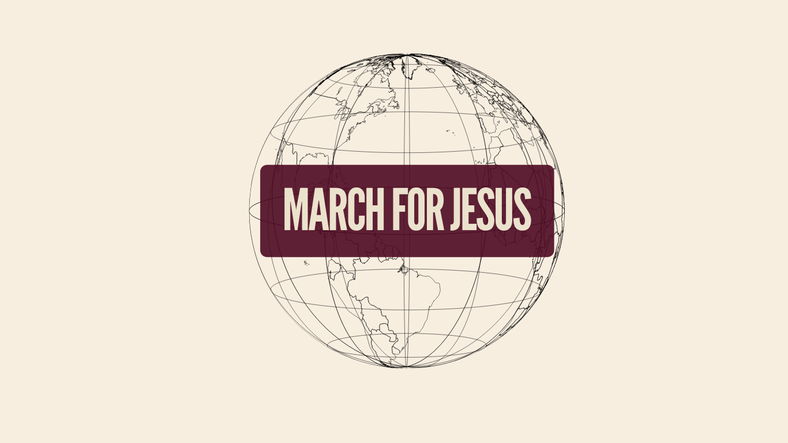

Local marches should feel rooted in their own place while clearly belonging to the same March for Jesus movement.
Private Resource Hub
Brand & Resource Guide
This page has been prepared as a professional, shareable reference for March for Jesus organisers across Europe. It combines the current Belfast brand direction with a practical documentation set that other cities can adapt for local delivery.
The goal is not uniformity for its own sake, but clarity, trust and recognisability. A more consistent presentation across Europe would make the movement feel stronger, more established and easier to understand at a glance.
Quick Navigation
Shared Direction
Why consistency matters
A recognisable Europe-wide identity helps each local march feel connected to a wider movement. When logos, colours, fonts and naming conventions stay aligned, the public sees one mission expressed in many cities rather than unrelated local campaigns.
The recommendation is simple: adapt locally, but stay visibly connected. Consistency will strengthen credibility, help materials travel well across borders and make the movement easier for churches, councils, media and the public to recognise.
Use the core palette, strong headline typography and uncluttered layouts so materials stay bold and easy to recognise.
The recommendation is to localise the existing system rather than creating a new logo language for every city.
Brand Guidelines
Colour palette
The current direction centres on burgundy, cream and plum, supported by black, white and a dark charcoal. Together they create a visual identity that feels grounded, established and distinctive across print, digital and event environments.
Burgundy
#4D0921
Primary brand anchor for buttons, title blocks, callouts and logo backplates.
Cream
#EBE2CD
Warm neutral for backgrounds, text reversal and lighter applications.
Plum
#80455F
Secondary accent for supporting panels, dividers and softer emphasis.
Black
#000000
Use sparingly for contrast, photography overlays and monochrome logo versions.
White
#FFFFFF
Useful for clean space, reversed text and presentation layouts.
Charcoal
#3C3333
Preferred dark neutral for body text, outlines and supporting copy.
Brand Guidelines
Typography
The Belfast reference uses a condensed headline style paired with a typewriter-inspired body font. That pairing gives the brand both strength and character while keeping practical information clear.
March For Jesus
Use League Gothic or a very similar condensed headline face for titles, hero moments, signage and key campaign statements.
March for Jesus brings churches and Christians together in worship, prayer and public witness. Supporting copy should feel direct, legible and practical.
The reference file calls for Lumios Typewriter New. Where that is not available online, use a close monospaced alternative while preserving the same tone and hierarchy.
Logo Guidance
Final logo direction: option 3
The Canva deck showed multiple routes while the identity was still being decided. The final direction selected was option 3. The examples below reflect that final choice, with the full March for Jesus lockup as the lead mark, colour iterations as supporting variants and the stacked MFJ mark as the secondary lockup.

Primary lockup
This is the direction to carry forward. The full March for Jesus logo should remain the lead expression of the identity, with the city name added in a consistent supporting position rather than creating a separate local brand.
The Belfast example shown here mirrors the recommendation from the later Canva slides: keep the chosen option 3 lockup and localise it by adding the city cleanly.
Approved supporting variants
These supporting treatments help the logo work across web, print, signage and social layouts while still staying within the same identity family.
Full lockup on cream
Use for formal presentations, documentation covers and light-background applications.

Wordmark plate
Useful when the full composition needs a compact, punchy title treatment.

Stacked MFJ mark
Secondary lockup for tighter spaces, profile imagery and branded accents.
Recommended city application
The recommendation for other marches across Europe is to keep the same branding style and add the city name in a clear, repeatable way. The more closely teams stay aligned to the same structure, the stronger the Europe-wide identity will become.
March For Jesus
Belfast
March For Jesus
Dublin
Suggested structure
Keep March for Jesus as the main brand expression. Add the city name underneath or alongside as a supporting location line, not as a replacement brand.
What this achieves
It keeps communication connected across borders, builds recognition faster and avoids fragmented local branding.
Examples
March for Jesus Belfast, March for Jesus Dublin, March for Jesus Paris and March for Jesus Madrid.
Recommendation
Avoid introducing unrelated colour systems, icons or wordmarks for each city unless there is a strong agreed reason to do so.
Shared Documentation
Planning pack for other cities
Alongside the brand guidance, this hub also points organisers to the key operational documents used in Belfast. These can be adapted locally by other Marches for Jesus across Europe as working templates.
These documents should be treated as a strong operational starting point rather than a final legal or regulatory pack. Each city should review and amend them in line with local permissions, venue requirements, health and safety expectations and route conditions.
Core planning
General risk assessment
File: MFJ Belfast General Risk Assessment.docx
- General planning risk framework.
- Useful before city-specific route detail is added.
Volunteers
Marshals guidelines
File: MFJ Belfast Marshals Guidelines.docx
- Stewarding and safety responsibilities.
- On-the-day conduct for volunteer marshals.
Operations
Master event plan
File: MFJ Belfast Master Event Plan.docx
- Overall event coordination document.
- Timing, roles, approvals and infrastructure planning.
Venue specific
City Hall risk assessment
File: MFJ Belfast Risk Assessment (City Hall).xlsx
- Venue-specific operational assessment.
- Useful for council-facing planning conversations.
Route specific
Event route risk assessment
File: MFJ Belfast Risk Assessment (Event Route).xlsx
- Route-level planning for procession movement.
- Crossing points, traffic interfaces and public safety controls.
Production
Stage plan
File: MFJ Belfast Stage Plan.docx
- Stage layout and production logistics.
- Equipment placement and platform management.
Support
Questions and access
Need the editable files?
If a local March for Jesus team would like the working files, templates or support adapting these resources for their own city, please get in touch by email.
Suggested use
Use this guide as a shared foundation, then tailor the operational documents to your city, permissions process and local event requirements while keeping the visual identity as aligned as possible.